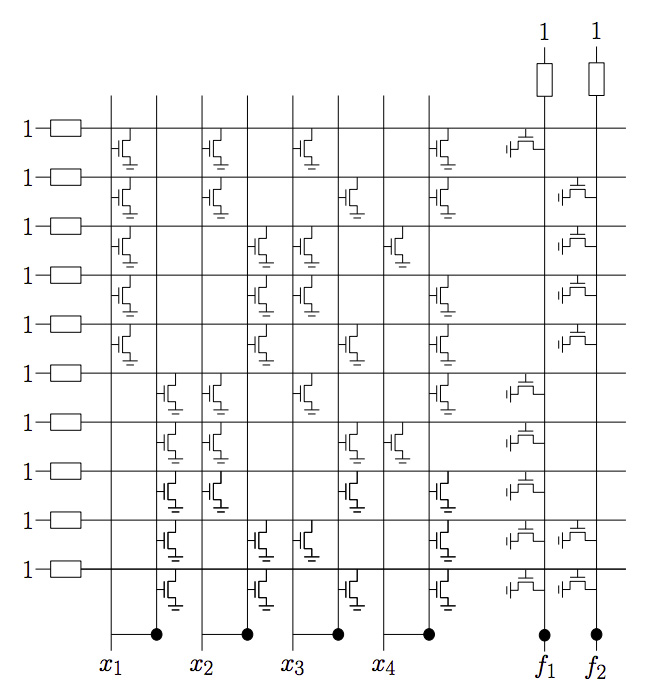

<!doctype html>
<html lang="en">
    <head>
        <meta charset="utf-8">
        <title>reveal-md</title>
        <link rel="stylesheet" href="css/reveal.css">
        <link rel="stylesheet" href="css/theme/black.css" id="theme">
        <!-- For syntax highlighting -->
        <link rel="stylesheet" href="lib/css/zenburn.css">

        <!-- If the query includes 'print-pdf', use the PDF print sheet -->
        <script>
          document.write( '<link rel="stylesheet" href="css/print/' + ( window.location.search.match( /print-pdf/gi ) ? 'pdf' : 'paper' ) + '.css" type="text/css" media="print">' );
        </script>
    </head>
    <body>

        <div class="reveal">
            <div class="slides"><section  data-markdown><script type="text/template"># Übungsblatt 4

<small>by Simon Selg, Danny Stoll</small>
</script></section><section  data-markdown><script type="text/template">
## Gliederung

- [Organisatorisches](/exc04.md#/2)
- [Allgemeines](/exc04.md#/3)
- Aufgaben
	- [Aufgabe 1](/exc04.md#/4)
	- [Aufgabe 2](/exc04.md#/5)
	- [Aufgabe 3](/exc04.md#/6)
	- [Aufgabe 4](/exc04.md#/7)
- [Blatt 4](/exc04.md#/8)

</script></section><section ><section data-markdown><script type="text/template">
## Organisatorisches
</script></section><section data-markdown><script type="text/template">
### Anwesenheit

</script></section></section><section ><section data-markdown><script type="text/template">
## Allgemeines


</script></section><section data-markdown><script type="text/template">
### Blatt 4 Statistiken

- $\varnothing_{Punkte} \approx 15.6$
- $\sigma_{Punkte} \approx 3.5$
</script></section><section data-markdown><script type="text/template">
### Klausur Relevanz
</script></section><section data-markdown><script type="text/template">
### Erste Aufgabe

- [Aufgabe 1](/exc04.md#/4)
- [Aufgabe 2](/exc04.md#/5)
- [Aufgabe 3](/exc04.md#/6)
- [Aufgabe 4](/exc04.md#/7)
- [Blatt 4](/exc04.md#/8)
</script></section></section><section ><section data-markdown><script type="text/template">
## Aufgabe 1
</script></section><section data-markdown><script type="text/template">
## CMOS


<aside class="notes" data-markdown>Logisim Beispiel</aside></script></section><section data-markdown><script type="text/template">
## CMOS Transistoren


</script></section><section data-markdown><script type="text/template">
## CMOS NOR


</script></section><section data-markdown><script type="text/template">
### Nächste Aufabe

- [Aufgabe 2](/exc04.md#/5)
- [Aufgabe 3](/exc04.md#/6)
- [Aufgabe 4](/exc04.md#/7)
- [Blatt 4](/exc04.md#/8)

</script></section></section><section ><section data-markdown><script type="text/template">
## Aufgabe 2

$f: \mathbb{B}^3 \mapsto \mathbb{B} \\\\ f(x_1, \\ x_2, \\ x_3) = x_1 \oplus x_2 \oplus x_3$
</script></section><section data-markdown><script type="text/template">
### a) Funktionstabelle

<style type="text/css">
.tg  {border-collapse:collapse;border-spacing:0;border-color:#aabcfe;}
.tg td{font-family:Arial, sans-serif;font-size:28px;padding:10px 5px;border-style:solid;border-width:1px;overflow:hidden;word-break:normal;border-color:#aabcfe;color:#669;background-color:#e8edff;}
.tg th{font-family:Arial, sans-serif;font-size:24px;font-weight:normal;padding:10px 5px;border-style:solid;border-width:1px;overflow:hidden;word-break:normal;border-color:#aabcfe;color:#039;background-color:#b9c9fe;}
.tg .tg-iwtr{background-color:#34cdf9;color:#ffffff;vertical-align:top}
.tg .tg-pto8{background-color:#34cdf9;color:#ffffff}
.tg .tg-2uhc{color:#ffffff}
.tg .tg-fbtz{background-color:#ffc702;color:#ffffff}
.tg .tg-gj82{background-color:#ffc702;color:#ffffff;vertical-align:top}
</style>
<table class="tg">
  <tr>
    <th class="tg-2uhc">$x_1$</th>
    <th class="tg-2uhc">$x_2$</th>
    <th class="tg-2uhc">$x_3$</th>
    <th class="tg-2uhc">$x_1 \oplus x_2$</th>
    <th class="tg-2uhc">$f$</th>
  </tr>
  <tr>
    <td class="tg-fbtz">0</td>
    <td class="tg-fbtz">0</td>
    <td class="tg-fbtz">0</td>
    <td class="tg-pto8">0</td>
    <td class="tg-pto8">0</td>
  </tr>
  <tr>
    <td class="tg-fbtz">0</td>
    <td class="tg-fbtz">0</td>
    <td class="tg-fbtz">1</td>
    <td class="tg-pto8">0</td>
    <td class="tg-pto8">1</td>
  </tr>
  <tr>
    <td class="tg-fbtz">0</td>
    <td class="tg-fbtz">1</td>
    <td class="tg-fbtz">0</td>
    <td class="tg-pto8">1</td>
    <td class="tg-pto8">1</td>
  </tr>
  <tr>
    <td class="tg-fbtz">0</td>
    <td class="tg-fbtz">1</td>
    <td class="tg-fbtz">1</td>
    <td class="tg-pto8">1</td>
    <td class="tg-pto8">0</td>
  </tr>
  <tr>
    <td class="tg-gj82">1</td>
    <td class="tg-gj82">0</td>
    <td class="tg-gj82">0</td>
    <td class="tg-iwtr">1</td>
    <td class="tg-iwtr">1</td>
  </tr>
  <tr>
    <td class="tg-gj82">1</td>
    <td class="tg-gj82">0</td>
    <td class="tg-gj82">1</td>
    <td class="tg-iwtr">1</td>
    <td class="tg-iwtr">0</td>
  </tr>
  <tr>
    <td class="tg-gj82">1</td>
    <td class="tg-gj82">1</td>
    <td class="tg-gj82">0</td>
    <td class="tg-iwtr">0</td>
    <td class="tg-iwtr">0</td>
  </tr>
  <tr>
    <td class="tg-gj82">1</td>
    <td class="tg-gj82">1</td>
    <td class="tg-gj82">1</td>
    <td class="tg-iwtr">0</td>
    <td class="tg-iwtr">1</td>
  </tr>
</table>

<font color="#ff4500">$ \\\\ \Rightarrow$</font> $ON(f) = \left\\{(001), (010), (100), (111)\right\\}$
</script></section><section data-markdown><script type="text/template">
### a) KDNF

$ON(f) = \left\\{(001), (010), (100), (111)\right\\}$
<font color="#ff4500">$ \\\\ \Rightarrow$</font> $f =  \\ \overline{x_1} \\ \overline{x_2}x_3 +   \\ \overline{x_1}x_2 \\ \overline{x_3} +  x_1 \\ \overline{x_2} \\ \overline{x_3} + \\ x_1 \\ x_2 \\ x_3$
</script></section><section data-markdown><script type="text/template">
### b) Schaltkreis

\begin{align}
f &= \\ \overline{x\_1}\\ \overline{x\_2}x\_3 +  \\ \overline{x\_1}x\_2\\ \overline{x\_3} +  x\_1\\ \overline{x\_2}\\ \overline{x\_3} + x\_1 x\_2 x\_3\\\\
&= \left(((\\ \overline{x\_1}\\ \overline{x\_2})x\_3) +  ((\\ \overline{x\_1}x\_2)\\ \overline{x\_3}) +  ((x\_1\\ \overline{x\_2}\\ \overline{x\_3}) + x\_1 x\_2 x\_3)\right)
\end{align}
</script></section><section data-markdown><script type="text/template">
### Häufige Fehler

- Knoten Beschriftung
- $AND_3$, $OR_4$
</script></section><section data-markdown><script type="text/template">
### Nächste Aufabe

- [Aufgabe 1](/exc04.md#/4)
- [Aufgabe 3](/exc04.md#/6)
- [Aufgabe 4](/exc04.md#/7)
- [Blatt 4](/exc04.md#/8)
</script></section></section><section ><section data-markdown><script type="text/template">
## Aufgabe 3
</script></section><section data-markdown><script type="text/template">
### Schaltkreis C

$$C := (\\ \overrightarrow{X\_3}, \\  (V, \\ E ), \\  \mbox{typ}, \\  IN, \\  \\ \overrightarrow{Y\_2})$$
</script></section><section data-markdown><script type="text/template">
### Schaltkreis C

$$
\begin{align}
	V &= \left\\{0, \\  1\right\\} \cup \left\\{x_1, \\  x_2, \\  x_3\right\\} \cup \left\\{v_i \mid 0 \leq i \leq 4 \right\\} \\\\
	\\ \overrightarrow{X\_3} &= \left\\{ x\_1, \\  x\_2, \\  x\_3 \right\\} \\\\
	\\ \overrightarrow{Y\_2} &= \left\\{ v\_3, \\  v\_4 \right\\} \\\\
\end{align}
$$
</script></section><section data-markdown><script type="text/template">
### Schaltkreis

$$
\begin{align}
IN &= \left\\{ (v_0 \mapsto  ((x_1, \\  v_0), \\  (x_2, \\  v_0)), \\  \\\\
	(v_1 \mapsto  ((x_1, \\  v_1), \\  (x_2, \\  v_1)), \\  \\\\
	(v_2 \mapsto  ((v_1, \\  v_2), \\  (x_3, \\  v_2)), \\  \\\\
	(v_3 \mapsto  ((v_1, \\  v_3), \\  (x_3, \\  v_3)), \\  \\\\
	(v_4 \mapsto  ((v_0, \\  v_4), \\  (v_2, \\  v_4))    \right\\} \\\\
\end{align}
$$
</script></section><section data-markdown><script type="text/template">
### Schaltkreis C

$$
\begin{align}
	\mbox{typ} = \left\\{ \left\\{ v_i \mapsto \wedge \mid i \in \left\\{ 0, \\  2  \right\\}  \right\\} \cup \\\\
	\left\\{ v_i \mapsto \oplus \mid i \in \left\\{ 1, \\  3  \right\\}  \right\\} \cup \\\\
	\left\\{  v_i \mapsto \vee \mid i \in \left\\{ 0, \\  2  \right\\} \right\\} \right\\}
\end{align}
$$
</script></section><section data-markdown><script type="text/template">
### Symbolische Simulation

Ausgang | Funktion
--- | ---
$v\_0$ | $x_1 \wedge x\_2$
$v\_1$ | $x\_1 \oplus x\_2$
$v\_2$ | $(x\_1 \oplus x\_2) \wedge x\_3$
|
$v\_3$ | $(x\_1 \oplus x\_2) \oplus x\_3$
$v\_4$ | $(x\_1 \wedge x\_2)  \vee ((x\_1 \oplus x\_2) \wedge x\_3)$

</script></section><section data-markdown><script type="text/template">
### Häufige Fehler

- Tupel Klammern
- Knoten Beschriftung
- Reihenfolge von $IN$ misachtet
- $C := (\overrightarrow{X\_3},   (V,  E ),   \mbox{typ},   IN,    \overrightarrow{Y\_2})$ vergessen.
</script></section><section data-markdown><script type="text/template">
### Nächste Aufabe

- [Aufgabe 1](/exc04.md#/4)
- [Aufgabe 2](/exc04.md#/5)
- [Aufgabe 4](/exc04.md#/7)
- [Blatt 4](/exc04.md#/8)
</script></section></section><section ><section data-markdown><script type="text/template">
## Aufgabe 4
</script></section><section data-markdown><script type="text/template">
## PLA

</script></section><section data-markdown><script type="text/template">
### f1
$$
\\\\
\\\\
$$


</script></section><section data-markdown><script type="text/template">
### Kosten

- $cost_1(p_q, \\ ..., \\ p_m):$ Anzahl Zeilen in PLA
- $cost_2(p_q, \\ ..., \\ p_m):$ Anzahl Transistoren in PLA

</script></section><section data-markdown><script type="text/template">
### Minimale Darstellung
####f1 - Würfel


</script></section><section data-markdown><script type="text/template">
### Minimale Darstellung
#### f1 - Polynom

$$q_1 = x_1 x_4 + \bar{x_2}\bar{x_3}x_4 + x_1 \bar{x_2} x_3$$
</script></section><section data-markdown><script type="text/template">
### Minimale Darstellung
#### f2 - Würfel


</script></section><section data-markdown><script type="text/template">
### Minimale Darstellung
#### f2 - Polynom

$q_2 = x_2 x_4 + \bar{x_1}x_2\bar{x_3} + \bar{x_1} x_3 x_4$
</script></section><section data-markdown><script type="text/template">
### Nächste Aufgabe

- [Aufgabe 1](/exc04.md#/4)
- [Aufgabe 2](/exc04.md#/5)
- [Aufgabe 3](/exc04.md#/6)
- [Blatt 4](/exc04.md#/8)
</script></section></section><section ><section data-markdown><script type="text/template">
## Blatt 5
</script></section><section data-markdown><script type="text/template">
### Hinweise
</script></section><section data-markdown><script type="text/template">
### Klausur Relevanz
</script></section></section><section  data-markdown><script type="text/template">
## Sonstiges
</script></section><section  data-markdown><script type="text/template">
## Quellen
</script></section></div>
        </div>

        <script src="lib/js/head.min.js"></script>
        <script src="js/reveal.js"></script>

        <script>
            function extend() {
              var target = {};
              for (var i = 0; i < arguments.length; i++) {
                var source = arguments[i];
                for (var key in source) {
                  if (source.hasOwnProperty(key)) {
                    target[key] = source[key];
                  }
                }
              }
              return target;
            }

            // Optional libraries used to extend on reveal.js
            var deps = [
              { src: 'lib/js/classList.js', condition: function() { return !document.body.classList; } },
              { src: 'plugin/markdown/marked.js', condition: function() { return !!document.querySelector('[data-markdown]'); } },
              { src: 'plugin/markdown/markdown.js', condition: function() { return !!document.querySelector('[data-markdown]'); } },
              { src: 'plugin/highlight/highlight.js', async: true, callback: function() { hljs.initHighlightingOnLoad(); } },
              { src: 'plugin/notes/notes.js', async: true, condition: function() { return !!document.body.classList; } },
              { src: 'plugin/math/math.js', async: true },
              { src: 'plugin/math/math.js', async: true }
            ];

            // default options to init reveal.js
            var defaultOptions = {
              controls: true,
              progress: true,
              history: true,
              center: true,
              transition: 'default',
              dependencies: deps,
              math: {
                mathjax: 'https://cdn.mathjax.org/mathjax/latest/MathJax.js',
                config: 'TeX-AMS_HTML-full'
              }
            };

            // options from URL query string
            var queryOptions = Reveal.getQueryHash() || {};

            var options = {};
            options = extend(defaultOptions, options, queryOptions);
            Reveal.initialize(options);
        </script>

          <script src="/scripts/presentations"></script>
    </body>
</html>

